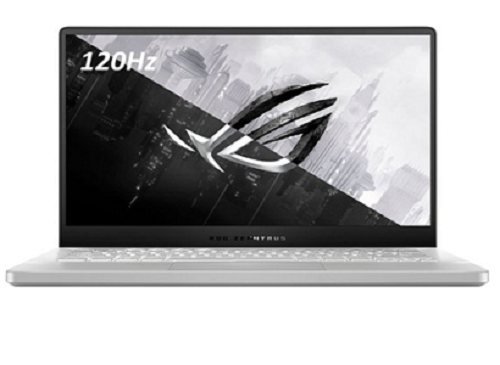
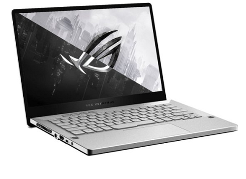
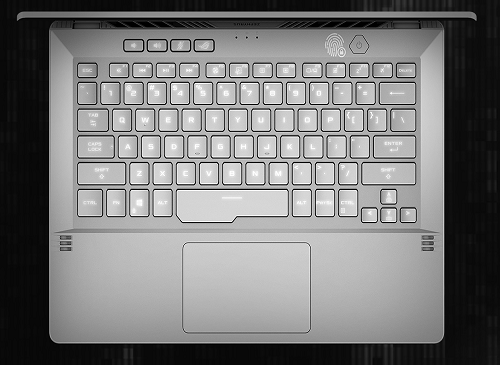

Best Laptop for Students!
February 2021 
Laptops are a necessity now in college. We need a lightweight, portable, and powerful laptop within our budget. It may be hard for many people to find the perfect laptop that can last them 4+ years. Because of this hardship with many people, I went on a quest to find a laptop that will meet everyone’s needs under $1,200.
From January, I needed a new laptop, as my old laptop was slowing down, and I could not get much work done on it. The new laptop I was going to get had to meet my requirements. Portability for college, good graphics for video editing and gaming, a fast processor for me to run my virtual machines and code, a good battery to last me till the end of the day in college, and a nice and comfortable keyboard to type better essays, and of course my blogs! All these requirements seemed impossible to find for a laptop under $1,200.
I started researching different websites, articles, and YouTube videos. It took me about two months, but I finally found a laptop that went beyond my requirements and was $1,200. It was called the Asus ROG Zephyrus G14. This laptop is one of a kind with an AMD Ryzen 9 4900HS, Nvidia Geforce RTX 2060 Max-Q, 1 TeraByte of Storage, and 16 GigaBytes of Ram. All of these specs make this laptop a productivity/gaming powerhouse. This laptop also has a 1080p display with a 144 Hertz Refresh Rate. It is also very light, about 0.5 pounds heavier than a MacBook Pro. With a 14-inch display, 3.9-pound laptop, you can carry this in a backpack with ease. It also plays various games with great FPS, which is good if you want to take a break from work, and relax. You can also take this to professional meetings, and it will look like a normal laptop.
Some pros of this laptop:
- Lightweight
- Play Games fast
- Can get up to 10 hours of battery life (for productive tasks)
- Video Editing is smooth
- Compiling Code is faster than ever
- The keyboard and touchpad feel amazing
- Fans are very quiet when not playing games.
Some pros of this laptop:
- Doesn’t have a webcam (You can just buy an external one easily)
- The keyboard backlighting is terrible
- Does not have an RJ-45 jack (For faster Internet Speed)
- VirtualBox may not work. VMware does though
I believe the Pros outweigh the Cons significantly. The Con’s are mostly cosmetic issues. This laptop is amazing for college students. I got my G14 on a deal in Best Buy for $1,199. Having this laptop for a week now feels amazing. I did have some issues with the VirtualBox images not booting up, but with VMware, it works flawlessly, so if you prefer Virtualbox over VMware it may be a problem (not a big one tho, VMware does more things.)
Hopefully, you enjoyed my review of the Asus G14, and hopefully, all of you will buy one! If you have any questions about this laptop you can email me at shahvraj26@gmail.com.